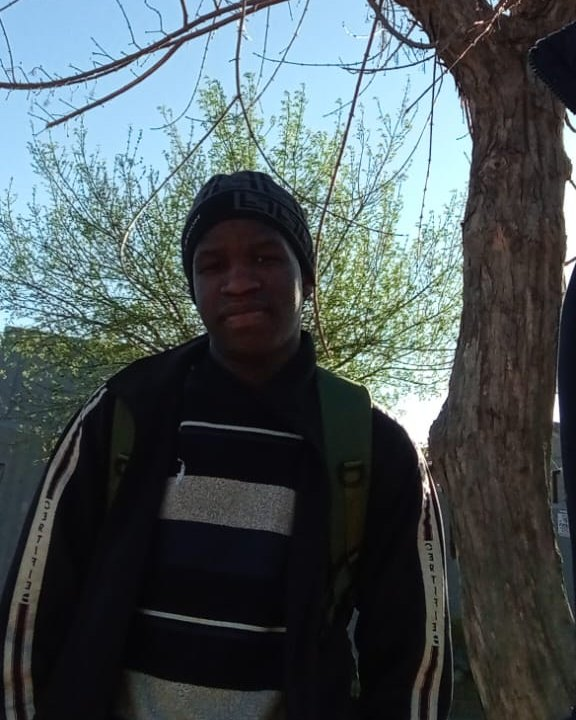

Why I made Draft Studio
I built Draft Studio especially for beginner graphic designers. When I started out, I didn’t have a clear path. Tutorials were scattered, advice was confusing, and it was hard to know what to learn first. Draft Studio is the place I wish I’d had: a simple, beginner-friendly space to learn the fundamentals, build confidence, and start creating real work.